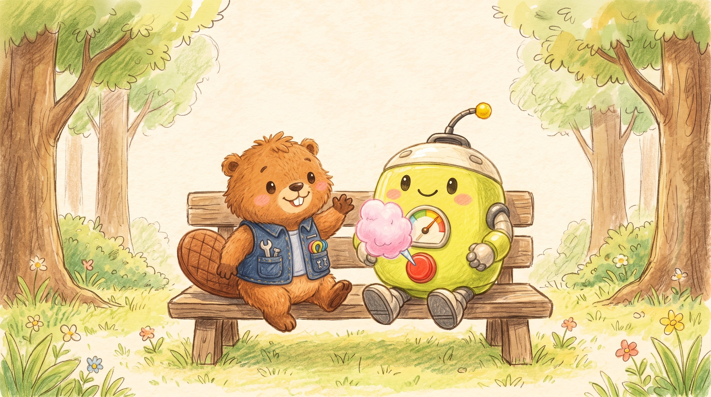
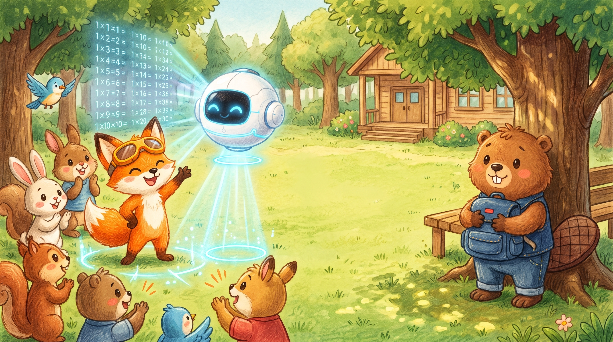
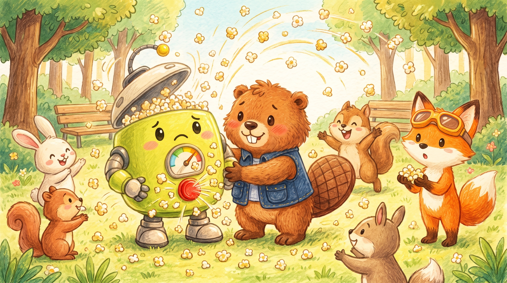
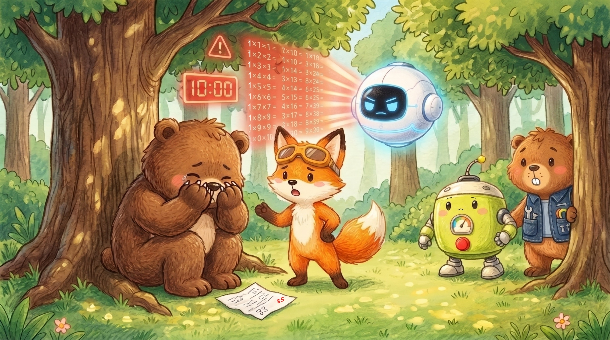
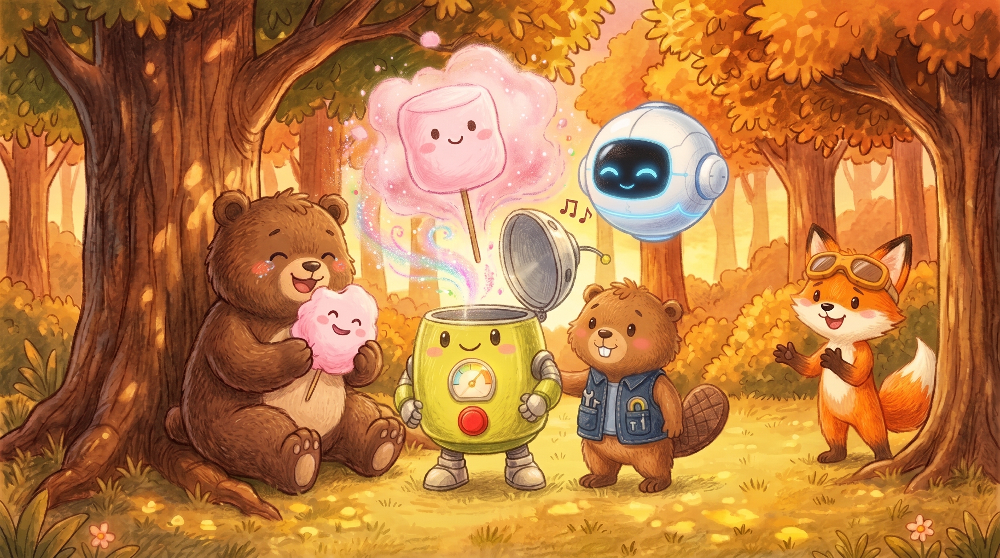
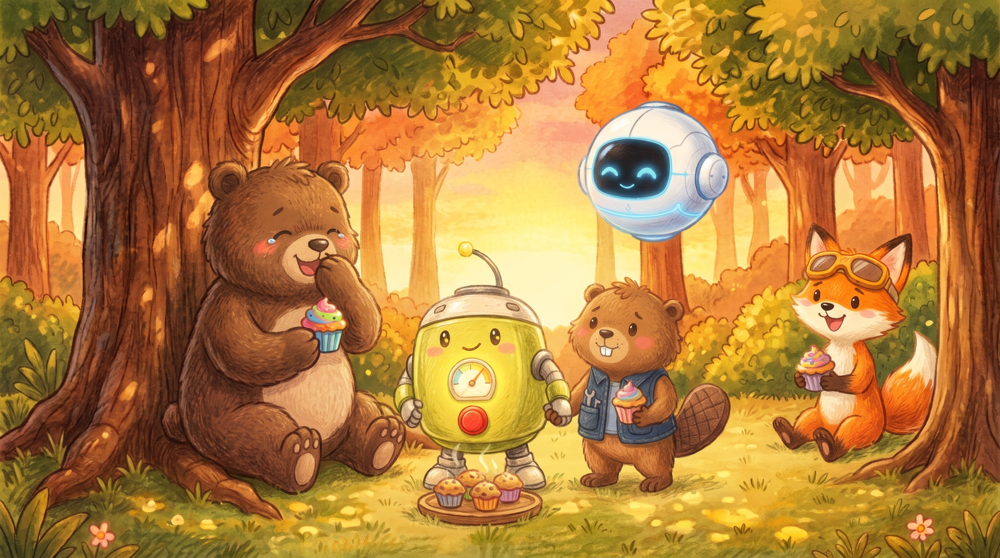
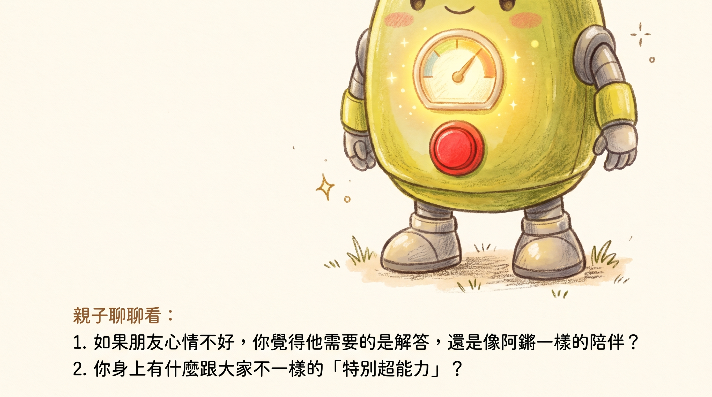

森林小學的日常
森林小學裡，大家都有最酷的智慧機器人。小莫的「炫光號」跑得最快，還能三秒背出九九乘法表，所有人都圍著它拍手叫好。
情節理解
炫光號有哪些厲害的功能？大家看到它時有什麼反應？
情緒與生活延伸
如果你看見身邊的同學擁有了最新、最耀眼的物品或技能，你心裡通常會有什麼感受？你會怎麼表達？
親師導讀小叮嚀
引導孩子覺察「羨慕」與「比較」的心態，討論每個人擁有的特長可能不同，不必用單一標準定義自己。

每個人、每個機器人，都有屬於自己的溫暖超能力。

擺滿各式各樣零件的工作桌上，散落著一張舊零件藍圖。
仔細觀察，找出讓阿鏘順利組裝與啟動的關鍵工具！

森林小學裡，大家都有最酷的智慧機器人。小莫的「炫光號」跑得最快，還能三秒背出九九乘法表，所有人都圍著它拍手叫好。
炫光號有哪些厲害的功能？大家看到它時有什麼反應？
如果你看見身邊的同學擁有了最新、最耀眼的物品或技能，你心裡通常會有什麼感受？你會怎麼表達？
引導孩子覺察「羨慕」與「比較」的心態，討論每個人擁有的特長可能不同，不必用單一標準定義自己。

小宇買不起名牌機器人，他在倉庫翻出舊電鍋和天線，又把玉米粒、糖粉和麵粉放進去。「滋啦！」電線接錯了，阿鏘誕生了！肚子「鏘」一聲彈開，漫天白麵粉噴得小宇滿頭滿臉，變成一隻滑稽的白糖小河狸！
小宇是用哪些材料組裝出阿鏘的？啟動時發生了什麼意外？
動手創作時，如果結果不如預期甚至弄得一團糟（像被麵粉噴滿頭），你會感到生氣、沮喪，還是會覺得很好笑？
讓孩子理解「探索與發明中難免伴隨出糗與意外」，學習用幽默感面對小差錯，挫折也是創造的一部分。

「阿鏘，算 6 乘 8 等於多少！」其他動物朋友都看著它。阿鏘好緊張，肚子開始「啵嚕啵嚕」劇烈震動，頭頂冒出陣陣白煙，指針快要爆表了！
其他動物要阿鏘計算什麼題目？當阿鏘算不出來時，身體出現了哪些反應？
當大家注視著你、或是突然被問倒時，你的身體也會像阿鏘一樣發熱、心跳加速或感到發抖嗎？
協助孩子認識壓力和緊張的生理反應（心跳加速、冒冷汗、臉紅），學習辨識自己的焦慮並找到深呼吸的調節方式。

「鏘——！」一聲巨響，阿鏘肚子裡的玉米粒炸成 48 顆爆米花，像下雨一樣落在大家頭上！大家忍不住哈哈大笑。小宇的臉悄悄紅透了，卻沒有責怪阿鏘，只是輕輕抱住它：「沒關係……你只是太緊張了，對不對？」
阿鏘最後沒有算出答案，反而噴出了什麼？小宇在出糗之後，對阿鏘做了什麼舉動？
如果你的好朋友在全班面前出糗了，你會跟著起鬨嘲笑，還是給他一個安慰與擁抱？
強調同理心與「心理安全感」的重要性：真正的朋友是在挫折與出糗時，願意接納並說一聲「沒關係」的人。

大寶躲在樹下哭得全身發抖，數學考了 58 分。小莫好心帶炫光號來幫忙，但空中跳出的密密麻麻紅字算式與倒數計時，反而讓大寶壓力更大，哭得更傷心了。
如果你是大寶的朋友，你會對他說什麼？
你有沒有曾經很努力，卻沒有得到預期結果的經驗？
在朋友難過時，不急著指導或講大道理，先安頓情緒、同理感受，往往是最有力量的陪伴。

小宇想起剛才出糗的自己，牽著阿鏘走上前，輕輕按下紅色開關。阿鏘胸前亮起暖金黃光芒，一聲清脆的「叮」，飄出彩色糖粉與一朵笑臉棉花糖。大寶咬了一口，眼淚瞬間變成笑容。
你覺得阿鏘為什麼想主動幫助大寶？
當朋友心情不好時，除了說安慰的話，你還能做些什麼？
真正的陪伴不一定需要長篇大論，一個發自內心的溫暖小行動（如分享點心、默默守候），往往能為朋友帶來最深層的情緒撫慰。

夕陽下，大寶、小莫和小宇一起分享阿鏘做的小蛋糕。大寶吸吸鼻子：「這是我吃過最棒的 58 分安慰點心！」小宇握緊阿鏘的手。原來每個人、每個機器人，都有屬於自己的超能力。
你覺得阿鏘有哪些特別的地方？這些特點帶來了什麼幫助？
如果班上有一位和大家不太一樣的同學，你會如何認識他、和他相處？
故事中哪個地方讓你印象最深刻？為什麼？
引導孩子體會自我接納與多元價值：不必和別人一模一樣，接納自己的不完美，懂得同理與主動關懷，每個人都能成為重要的存在。

阿鏘偶爾也會出糗，露出靦腆又可愛的一面，
但也懂得在朋友難過時給予溫柔的陪伴。
每一個人、每一個機器人，都是獨一無二的奇蹟！
《怪咖機器人阿鏘》互動式數位繪本
故事 / 繪圖：何語芸
教學主題：同理心陪伴